Manual de uso — controle de gastos por fala, extrato e fatura
Endereço do app: https://rgbittencourt.github.io/caderneta/
Setembro de 2026 · aplica-se à versão caderneta-v35 em diante
Como este manual foi feito
Todas as telas deste manual usam dados inventados, só para ilustrar. Nenhum valor, nome de loja ou saldo real aparece aqui.
1. Começar
Instalar
iPhone e iPad: abra o endereço no Safari → botão Compartilhar → Adicionar à Tela de Início.
Android: abra no Chrome → Instalar app.
Mac e Windows: no Chrome ou Edge, use o ícone de instalar na barra de endereço. No Safari: Arquivo → Adicionar ao Dock.
Entrar
Toque em Entrar com Google e deixe marcada a permissão do Google Drive. Os seus dados ficam em dois lugares: no aparelho e numa pasta chamada Caderneta, no seu Drive. Cada pessoa da família entra com a própria conta e só enxerga os próprios dados.
Também dá para usar só neste aparelho, sem conta. Nesse caso os dados não vão para o Drive e não passam para outro celular.
Atualizar
Quando há versão nova, o app mostra no alto Nova versão da Caderneta · Atualizar. Para saber qual versão está instalada, vá em Ajustes → Dados → Versão do app. Se ficar atrasada, feche o app por completo e abra de novo, ou use Procurar atualização.
2. As abas
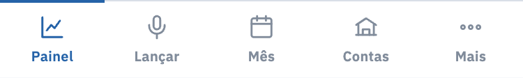
No celular, as abas ficam embaixo. Futuro, Meta, Análises e Ajustes estão no botão Mais. No computador, tudo aparece no menu lateral.
Aba
Para que serve
Painel
O retrato do momento: dinheiro no banco, cartões, teto do mês e próximos vencimentos.
Lançar
Tudo o que entra no app: fala, lançamento na mão, importar extrato, importar fatura, cadastrar dívidas.
Mês
Os lançamentos do mês, dia a dia, e as contas a pagar.
Contas
Só para ver: saldo de cada conta, cartões e o extrato mês a mês.
Futuro
O que já está comprometido nos próximos meses.
Meta
Meta de poupança e o método 50-30-20.
Análises
Diagnóstico do mês, compras parceladas, gastos por cartão e dívidas.
Ajustes
Saldos, renda, cartões, categorias, gastos fixos e dados.
3. Painel
O Painel começa pelo mais básico: quanto você tem no banco e quanto já está lançado em cada cartão.
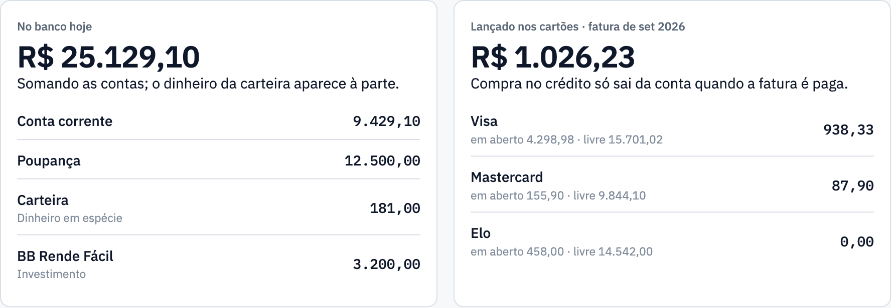
À esquerda, o total somando as contas, com uma linha para cada uma. O dinheiro da Carteira aparece na lista, mas fora do total, porque não está no banco. À direita, a fatura do mês de cada cartão, o total em aberto (contando as parcelas futuras) e o limite livre. Tocando em qualquer linha, você vai direto ao extrato daquela conta ou cartão.
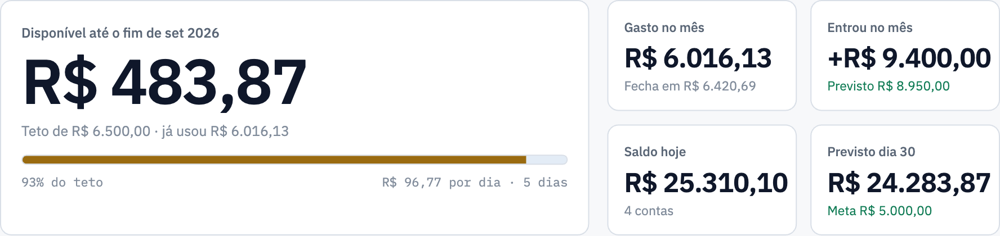
Disponível até o fim do mês é o teto menos o que já foi gasto e o que está comprometido (parcelas e fixos ainda por lançar). Ao lado, quatro números do mês: gasto, entrada, saldo de hoje e saldo previsto para o último dia.
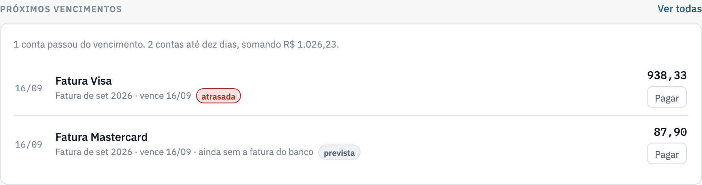
Próximos vencimentos reúne o que vence em até dez dias e o que já passou: gastos fixos, parcelas de dívida e faturas.
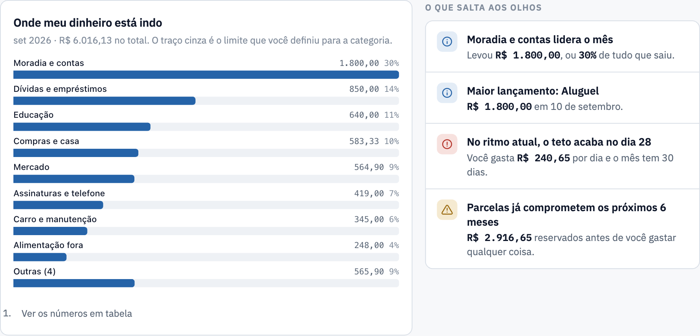
Onde meu dinheiro está indo: as categorias do mês em ordem de valor. O traço cinza é o limite que você definiu para a categoria, em Ajustes.
4. Lançar por fala
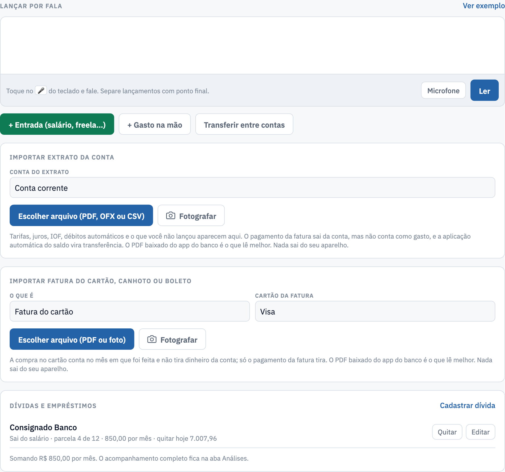
Toque no 🎤 do teclado (ou no botão Microfone) e fale. Separe vários lançamentos com ponto final. Ao lado ficam os botões para lançar na mão: entrada, gasto e transferência entre contas.
"caiu o salário", "recebi", "estorno", "rendimento"
Para quem
"pra o João" — em Pix e transferência
Categoria
sozinho, pela palavra que aparece primeiro: mercado, farmácia, posto…
"Vinte e três reais, almoço no IFSC, cartão de crédito Visa." "Trezentos e oitenta reais na loja de ferramentas, em três vezes no Mastercard." "Caiu o salário, nove mil e oitocentos reais." "Saquei duzentos reais." — não é gasto: sai da conta e vai para a Carteira.
Confira antes de salvar
O que a fala gerou aparece na lista Confira antes de salvar. Ali dá para mudar valor, descrição, categoria, forma de pagamento, data e parcelas — e só então salvar.
5. Agendar pagamentos
Diga quando e o lançamento já fica marcado para o dia certo. Serve para pagamento, depósito e transferência.
"Mil e duzentos reais, aluguel, dia 10." "Quinhentos reais, internet, amanhã." "Trezentos reais, escola, dia 5 de outubro."
Também vale "10/10", "hoje" e "ontem".
Sem dizer o mês, "dia 10" é o próximo dia 10.
Até três dias para trás, ele entende que é deste mês — quem fala "dia 23" no dia 25 está lançando o que já aconteceu.
O lançamento aparece com a marca agendado até chegar o dia, e já entra no saldo previsto do mês.
6. Importar o extrato da conta
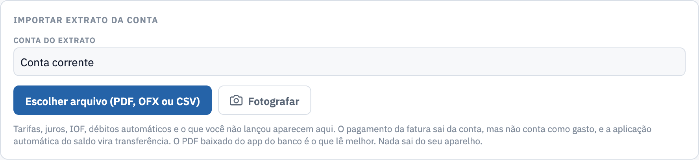
Aba Lançar → Importar extrato da conta: escolha a conta e o arquivo. O PDF baixado do app do banco é o que lê melhor; foto, OFX e CSV também servem.
O que o app faz sozinho
Lê cada lançamento com o nome certo e separa entradas de saídas.
Pagamento de fatura ("Pagto cartão crédito") vira pagamento: sai da conta, mas não conta como gasto — as compras já vieram da fatura.
Saque vira transferência para a Carteira.
Aplicação automática do saldo (no Banco do Brasil, o Rende Fácil) vira transferência para uma conta própria, criada na primeira importação. Assim a conta corrente fica igual ao saldo impresso no extrato.
Rendimento: o extrato não traz essa linha — o dinheiro volta escondido dentro dos resgates. Quando o banco devolve mais do que tirou, o app pergunta se pode lançar a diferença como Rendimentos.
Conferência do saldo: no fim, ele compara o saldo impresso pelo banco com o que calculou e pergunta se pode acertar.
Importe do mês mais antigo para o mais novo
O desconto do consignado anda pelos salários já lançados. Fora de ordem, ele não fecha.
7. Importar a fatura do cartão
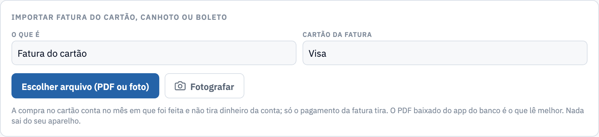
Aba Lançar → Importar fatura do cartão, canhoto ou boleto: escolha o tipo, o cartão e o arquivo. O mês não se escolhe — vem da própria fatura.
O que o app faz sozinho
O mês da fatura é o do fechamento impresso nela. A fatura que fechou em 06/01 é a fatura de janeiro, mesmo sendo paga em 16/01.
Aprende o dia do fechamento do cartão e reconhece o cartão pelo que está escrito na fatura.
Saldo da fatura anterior e pagamento em débito em conta não são compras: se um anula o outro, a fatura anterior foi paga; o que sobrar entra como Saldo da fatura anterior.
Parcelas: a parcela 03/10 já reserva as seguintes. Se o banco muda os centavos de uma parcela para outra, o app reconhece e acerta pelo valor da fatura; se uma parcela prevista não veio, ele empurra para a fatura seguinte.
Juros, IOF e tarifas entram como lançamento daquela fatura.
A regra de ouro do crédito
A compra no cartão conta como gasto no mês em que foi feita e entra nas análises e nos gráficos — mas não sai da conta corrente. O dinheiro só sai quando a fatura é paga.
8. Boleto e canhoto
Boleto: fotografe o código de barras ou digite a linha digitável. Em Quando pagar, escolha No vencimento (agendar) — o padrão — ou Hoje (já paguei).
Canhoto ou cupom: em Pago com, diga como pagou (débito, Pix, boleto ou um cartão). Essa escolha vale para o documento inteiro e pode ser mudada linha a linha na conferência.
Foto: uma página por vez, com boa luz e o papel reto. Depois da primeira, aparece o botão Fotografar mais uma página.
9. A conferência: nada entra duas vezes
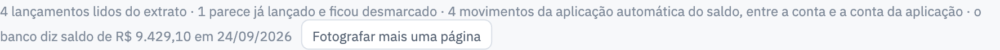
Depois de ler um documento, o app resume o que encontrou: quantos lançamentos, quantos parecem já lançados, o que ficou de fora e o saldo que o banco informa.
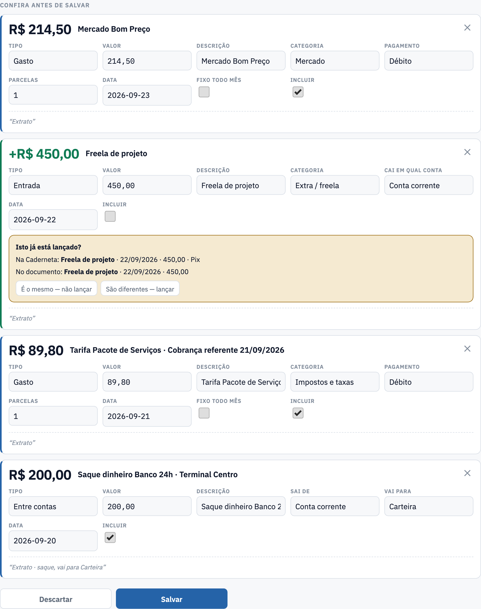
Cada linha pode ser ajustada antes de salvar. O que já está lançado vem desmarcado, com os dois lado a lado e os botões É o mesmo — não lançar e São diferentes — lançar.
Como ele reconhece o que já foi lançado
Mesmo tipo (gasto, entrada, pagamento de fatura, entre contas).
Mesmo valor, com tolerância de um centavo.
Data com folga de três dias — seis, no pagamento de fatura.
No crédito, reconhece mesmo que você tenha dito o cartão errado, quando a descrição bate.
Parcelas têm regra própria: a parcela 02/06 é reconhecida mesmo com os centavos diferentes.
Depois de salvar, ainda existe o Repetidos, no alto do extrato (aba Contas): ele procura dois lançamentos iguais já gravados, mostra de cada lado qual fatura abate e de onde veio, e deixa você escolher — São diferentes, Apagar o primeiro ou Apagar o segundo.
10. Aba Mês
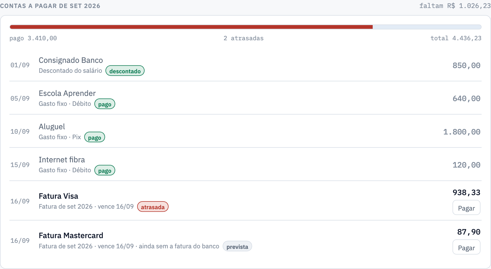
Contas a pagar reúne, em ordem de data, os gastos fixos, as parcelas de dívida, o consignado que sai do salário e a fatura de cada cartão. Lançar dá baixa num gasto fixo; Pagar abre o pagamento da fatura.
Abaixo ficam os lançamentos do mês, dia a dia. Cada gasto mostra a forma de pagamento e a marca crédito · não sai da conta ou débito. Tocando em qualquer linha, dá para corrigir ou excluir.
11. Aba Contas
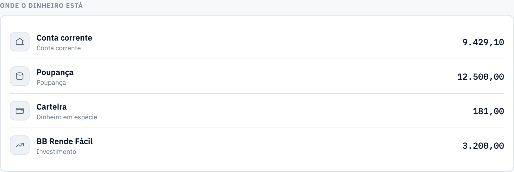
Onde o dinheiro está: o saldo de hoje de cada conta. Toque numa conta para ver o extrato dela.
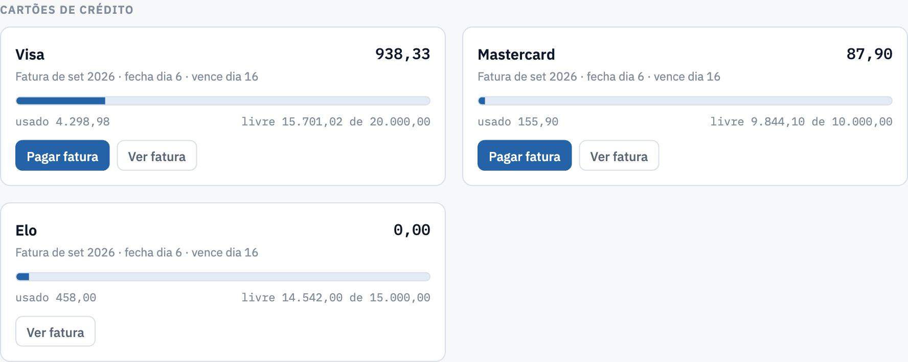
Cada cartão mostra a fatura do mês, o limite usado contando as parcelas futuras e o que está livre. Pagar fatura lança o pagamento; Ver fatura abre a lista de compras daquela fatura.
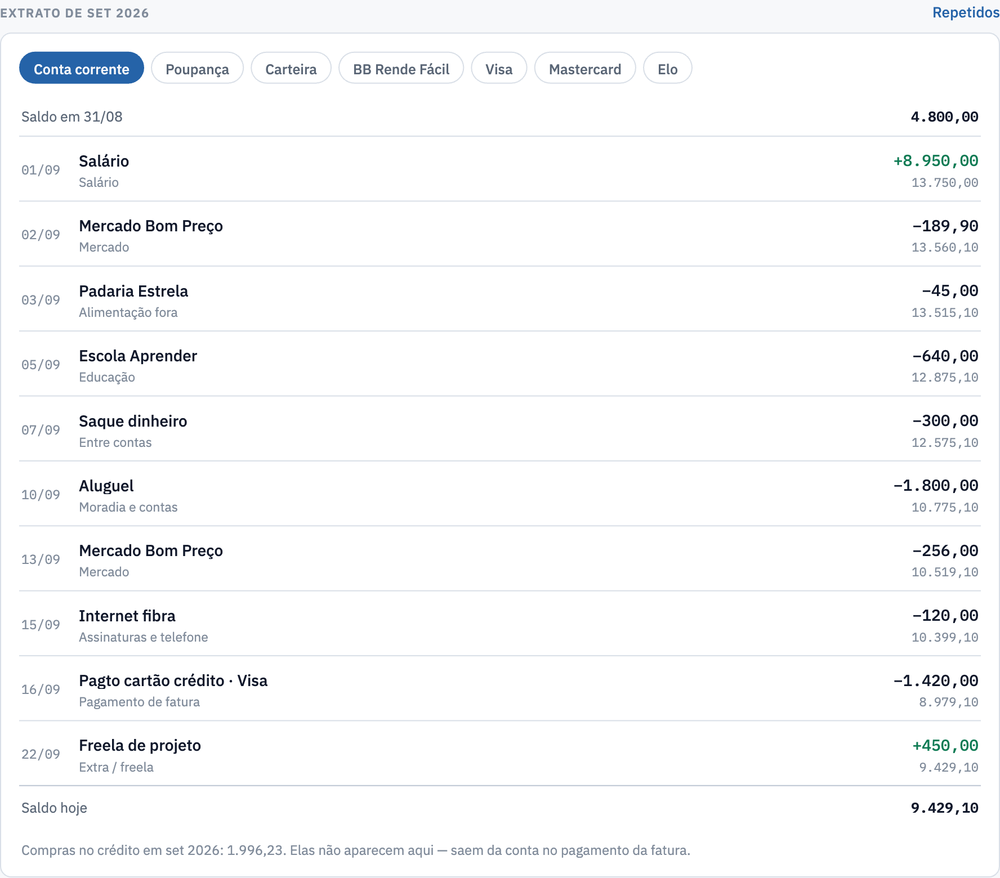
O extrato da conta, como o do banco: saldo anterior, cada movimento com o saldo depois dele e o saldo no fim do mês. As compras no crédito não aparecem aqui — o rodapé lembra quanto foi no crédito naquele mês.
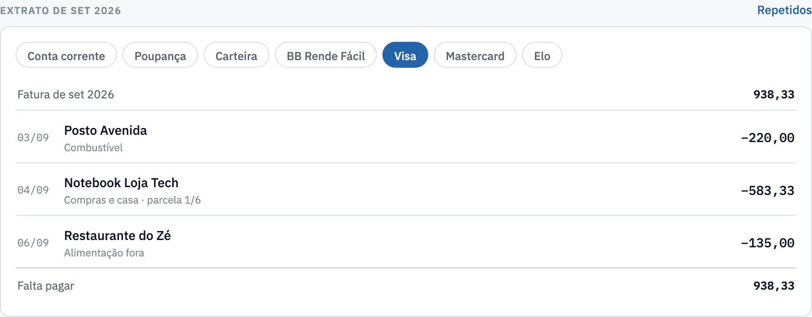
No cartão, a fatura daquele mês: cada compra, o pagamento e o que falta pagar. Compras do mês anterior podem aparecer aqui, porque o que manda é o fechamento.
12. Saldos e acertos
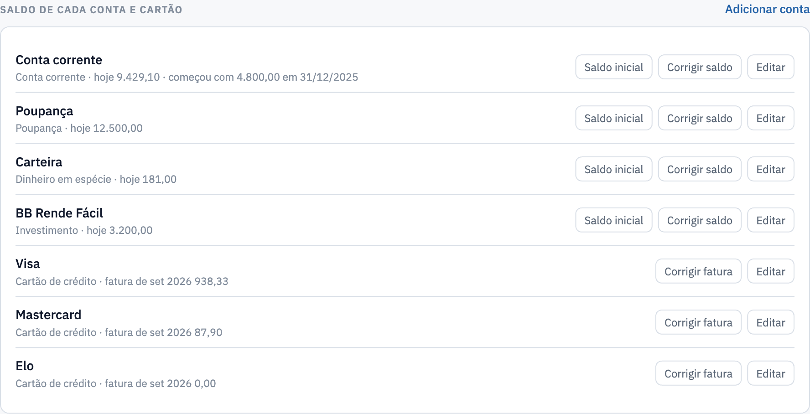
Ajustes → Saldo de cada conta e cartão: cada conta tem Saldo inicial, Corrigir saldo e Editar; cada cartão tem Corrigir fatura.
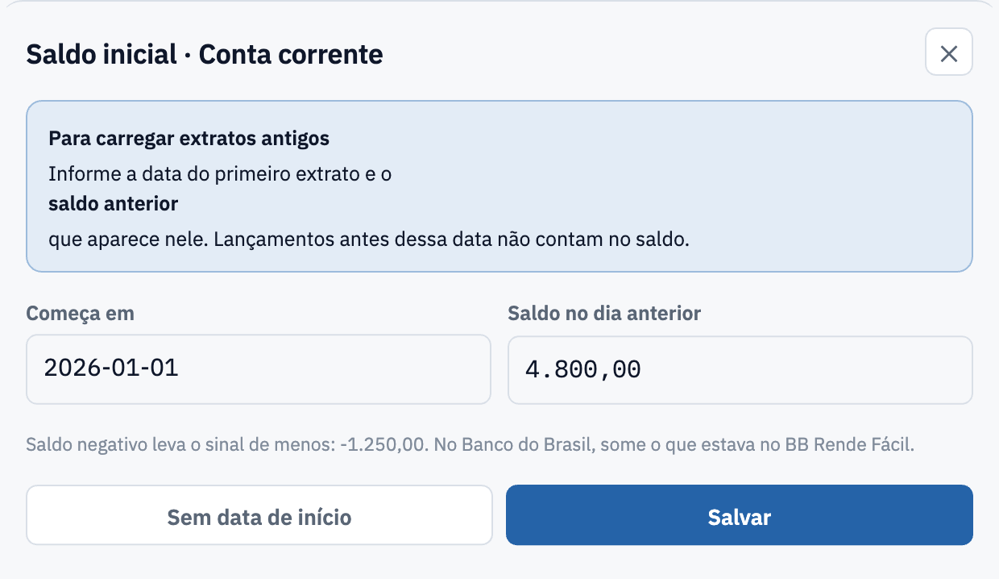
Saldo inicial: a data do primeiro extrato que você vai importar e o saldo anterior impresso nele. Lançamentos antes dessa data não contam no saldo.
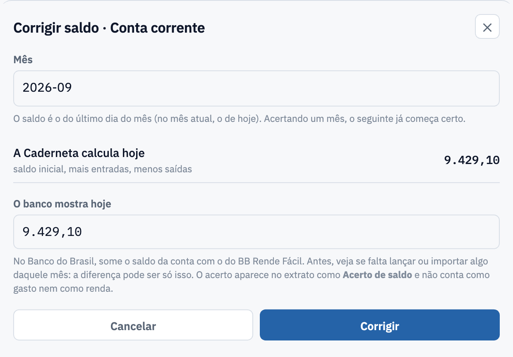
Corrigir saldo: escolha o mês e digite o saldo que o banco mostrava no último dia dele (no mês atual, o de hoje). A diferença vira um Acerto de saldo naquele dia — assim o mês seguinte já começa certo e os anteriores não mudam. O acerto não conta como gasto nem como renda, aparece no extrato e pode ser apagado.
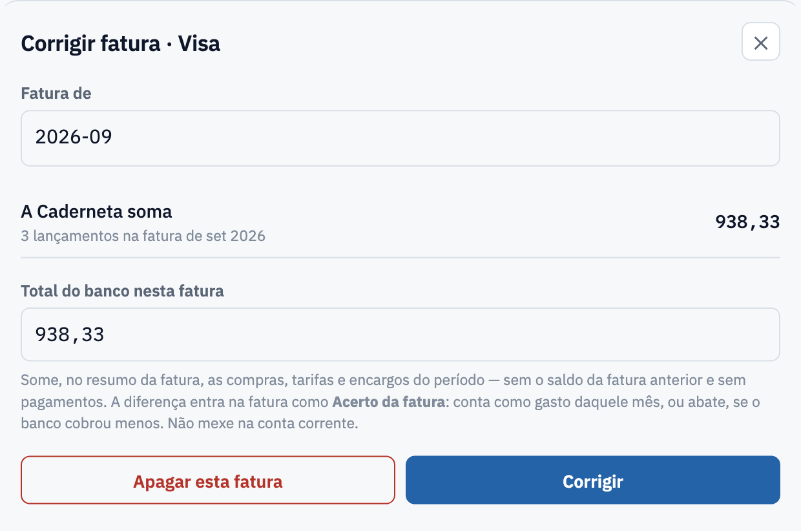
Corrigir fatura: digite o total que o banco cobrou naquela fatura — compras, tarifas e encargos, sem o saldo anterior e sem pagamentos. A diferença entra como Acerto da fatura. O botão vermelho Apagar esta fatura (dois toques) tira os lançamentos daquela fatura e, de um parcelado, aquela parcela e as seguintes — sem tocar no pagamento. É o caminho para importar de novo uma fatura que entrou errada.
Banco do Brasil
Ao comparar o saldo, some a conta corrente com o BB Rende Fácil: para o banco são dois lugares, mas o dinheiro é o mesmo.
13. Carteira e dinheiro em espécie
O saque tira da conta corrente e põe na Carteira. O gasto conta quando o dinheiro sai da carteira, e há dois jeitos:
Lançando cada gasto: "trinta reais, feira, em dinheiro".
De uma vez: Ajustes → Carteira → Corrigir saldo, contando o que sobrou — ou tocando em Não sobrou nada: zerar. A diferença entra como gasto em dinheiro, na categoria Outros, e depois dá para trocar a categoria tocando no lançamento.
14. Cartões de crédito
A compra conta no mês em que foi feita. A fatura em que ela será cobrada depende do dia do fechamento do cartão.
Pagar fatura: antes de lançar, o app procura um pagamento do mesmo valor que já tenha saído da conta e oferece É este pagamento — assim o dinheiro não sai duas vezes.
Fatura paga em pedaços: quando o banco debita em partes, o app soma. Enquanto falta, mostra pagamento parcial de X em N vezes; quando fecha, paga em N pagamentos.
Fatura prevista: enquanto você não importa a fatura daquele mês, o valor é só a previsão pelas compras e parcelas conhecidas — ela aparece como prevista, nunca como atrasada.
15. Dívidas e quitação
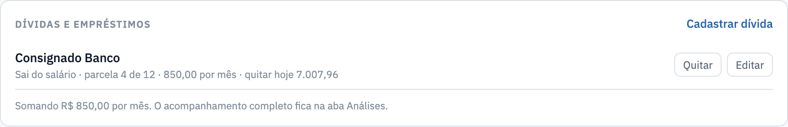
O cadastro fica no fim da aba Lançar, junto com as importações. Cada dívida mostra a parcela, em qual você está e quanto falta para quitar hoje.
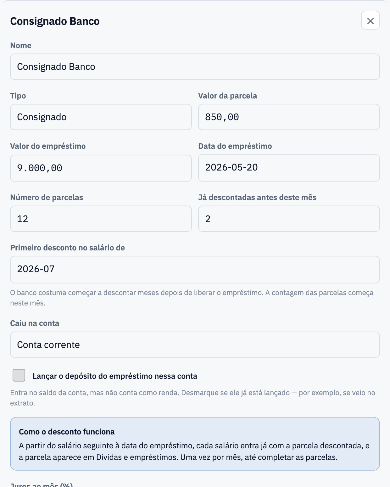
No consignado, informe o valor do empréstimo, a data em que caiu, a conta, o número de parcelas, o valor da parcela, em que mês começou o desconto no salário e quantas já foram descontadas antes deste mês. O banco costuma começar a descontar meses depois de liberar o dinheiro.
O empréstimo entra no saldo da conta, mas não conta como renda.
A parcela sai do salário: conta como gasto, mas não sai da conta de novo — a renda já veio descontada.
Nunca dois descontos no mesmo mês.
Para empréstimo ou financiamento pago por boleto ou débito, diga Já estou pagando ("parcela 4 de 12") ou Ainda vou começar, com a data da primeira. A parcela entra nos gastos fixos até a última.
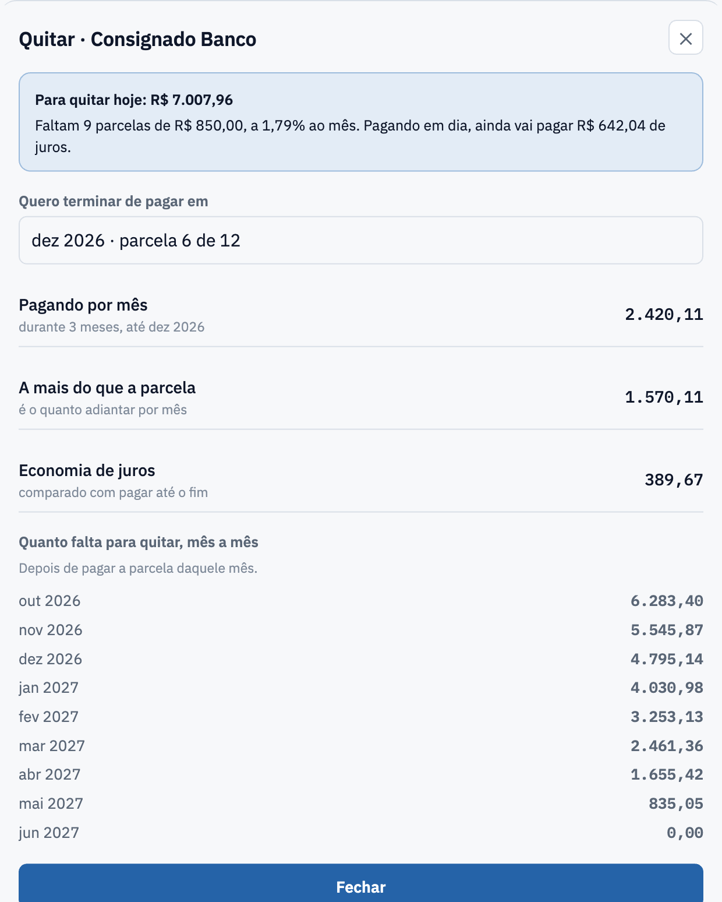
Quitar antes: mostra quanto falta para quitar hoje, quanto pagar por mês para terminar num mês escolhido, quanto é a mais que a parcela e quanto você economiza de juros — e ainda o saldo para quitar mês a mês.
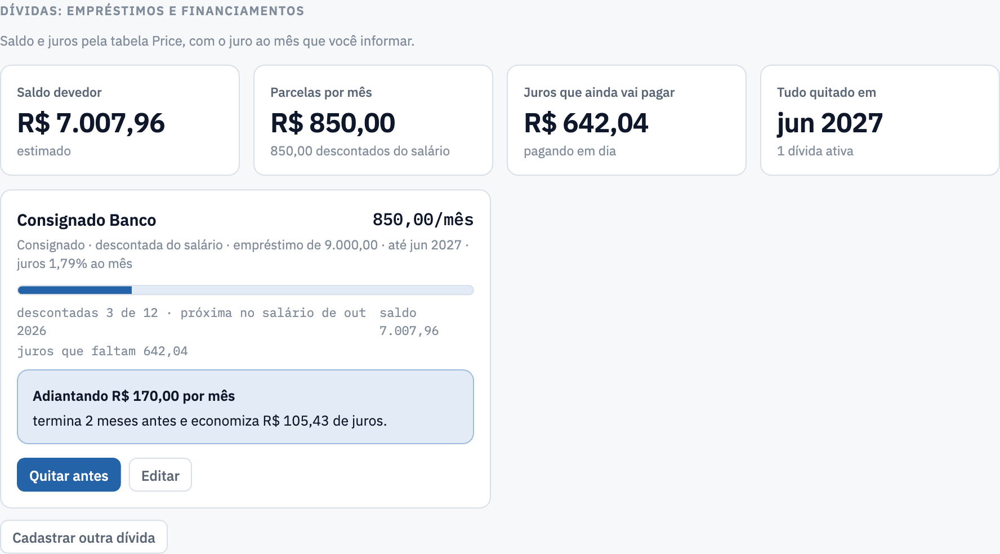
Na aba Análises, o acompanhamento: saldo devedor, quanto sai por mês, juros que ainda vai pagar e quando tudo estará quitado.
16. Salário e renda
Em Ajustes → Meta do mês você informa a renda líquida, a conta onde o salário cai e o teto de gastos.
A renda entra sozinha no primeiro dia útil do mês, pulando fim de semana e feriado nacional.
Em mês com parcela de consignado, ela entra já descontada, e a parcela aparece em Dívidas.
Se você lançar o salário à mão, ou ele vier no extrato, o app não lança de novo.
Teve aumento? Mude o valor e o app pergunta a partir de que mês vale. Meses anteriores e salários já lançados não mudam.
17. Futuro e Meta
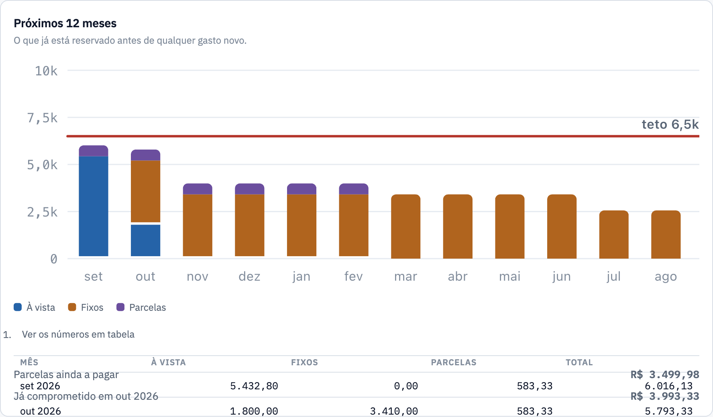
Futuro: o que já está comprometido nos próximos meses — parcelas, gastos fixos e dívidas — antes de você gastar mais nada.
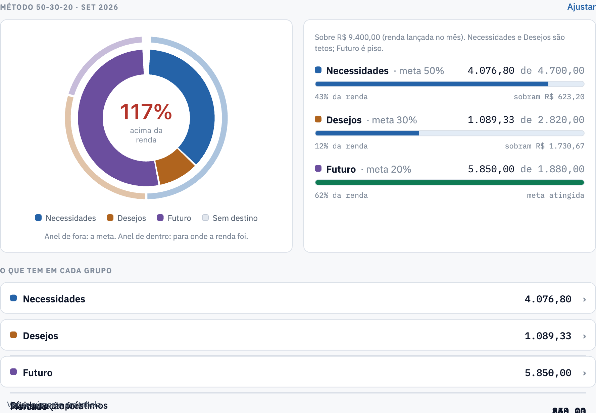
Meta: a meta de poupança e o método 50-30-20, que divide a renda em Necessidades, Desejos e Futuro. O anel de fora é a meta; o de dentro, para onde a renda foi. Necessidades e Desejos são tetos; Futuro é piso.
18. Análises
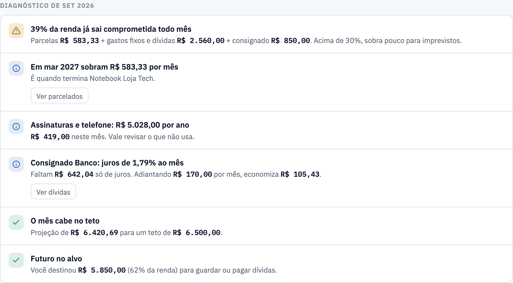
O diagnóstico lê os seus números e aponta o que merece atenção, em ordem de gravidade, com botões de ação quando dá para resolver ali mesmo.
Também estão nessa aba: compras parceladas (quando cada uma termina e quanto sobra por mês depois), gastos por cartão e forma de pagamento, e o acompanhamento das dívidas.
19. Carregar meses anteriores
Comece do zero, se for o caso: Ajustes → Recomeçar os lançamentos. O app guarda um backup no seu Drive antes de apagar e pergunta a data do primeiro extrato e o saldo de cada conta no dia anterior.
Prepare o cadastro: contas, cartões (dia de fechamento e de vencimento) e dívidas — inclusive os consignados, com o mês em que o desconto começou.
Importe os extratos da conta, do mês mais antigo para o mais novo.
Importe as faturas de cada cartão, em qualquer ordem.
Responda às perguntas: quando ele perguntar se a fatura já foi paga, responda Sim; quando oferecer o rendimento da aplicação, aceite.
Confira o saldo ao fim de cada extrato: a conferência deve dizer "está batendo".
Não desconta duas vezes
As compras que vêm da fatura não tiram dinheiro da conta, e o pagamento que vem do extrato não conta como gasto. É por isso que a ordem não estraga nada.
20. Quando algo não bate
Sintoma
O que olhar
Saldo diferente do banco
Falta importar algum extrato? No BB, some o Rende Fácil. Se ainda diferir, use Corrigir saldo no mês certo.
Fatura aparece atrasada
Ela foi importada? O pagamento do extrato está ligado a ela? Veja Pagar fatura → É este pagamento.
Fatura maior que a do banco
Alguma parcela reservada a mais. Importe a fatura (o app acerta) ou use Apagar esta fatura e importe de novo.
Lançamento repetido
Aba Contas → Repetidos. Nada é apagado sem você mandar.
Pagamento da fatura em pedaços
É normal: o app soma as partes e mostra pagamento parcial até fechar.
Documento não foi lido
O app mostra uma amostra sem seus dados (números viram 9, nomes viram x). Copie e mande na conversa com o Claude.
Não vejo uma opção nova
Confira a versão em Ajustes → Dados, feche o app e abra de novo.
21. Dados, backup e privacidade
Os dados ficam no aparelho e no seu Google Drive, numa pasta chamada Caderneta. Não existe servidor: ninguém mais tem acesso.
Os documentos que você lê (PDF, foto) não saem do aparelho — a leitura acontece ali mesmo.
Em Ajustes → Dados: Levar para uma planilha (CSV), Backup completo (JSON), Restaurar de um backup (lista os backups do Drive) e Recomeçar os lançamentos.
Sem internet funciona normalmente; a sincronização acontece quando a conexão volta.
O acesso ao Drive dura cerca de uma hora; depois aparece Sincronizar no alto — um toque e pronto.
22. Ajuda dentro do app
Em Ajustes → Ajuda e manual ficam duas coisas: a Ajuda rápida, com as dúvidas mais comuns e uma busca, e o atalho para este manual.
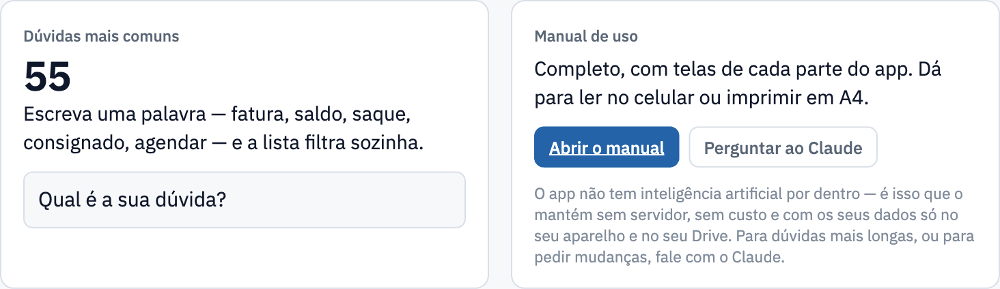
Escreva uma palavra — fatura, saldo, saque, consignado, agendar — e a lista filtra sozinha. Cada resposta tem o atalho No manual, que abre a seção correspondente.
O botão Perguntar ao Claude copia a sua pergunta e abre a conversa. O app não tem inteligência artificial embutida: ele funciona sem servidor e sem custo, e é na conversa com o Claude que dúvidas mais longas são respondidas — e é lá também que se pedem mudanças no app.
23. Glossário
Termo
O que quer dizer na Caderneta
Fatura de um mês
A fatura que fechou naquele mês, mesmo que seja paga no mês seguinte.
Em aberto (cartão)
Tudo o que ainda será cobrado naquele cartão, contando as parcelas futuras.
Fatura prevista
O valor calculado pelo app enquanto a fatura do banco não foi importada.
Acerto de saldo
Lançamento que ajusta o saldo de uma conta num dia, sem contar como gasto ou renda.
Acerto da fatura
Diferença entre a fatura do banco e a soma que o app tinha.
Agendado
Lançamento com data à frente: já está no previsto, mas ainda não aconteceu.
Reservado (parcela)
Parcela futura que o app já separou quando importou a fatura em que a compra começou.
Desconto em folha
Parcela que sai do salário: conta como gasto, mas não sai da conta.
Fora do app
O outro lado de uma transferência que você não acompanha por aqui.
Caderneta — app de uso pessoal e familiar, sem servidor e sem custo.
Dúvidas e mudanças: peça ao Claude, em português, numa conversa aberta na pasta do projeto.